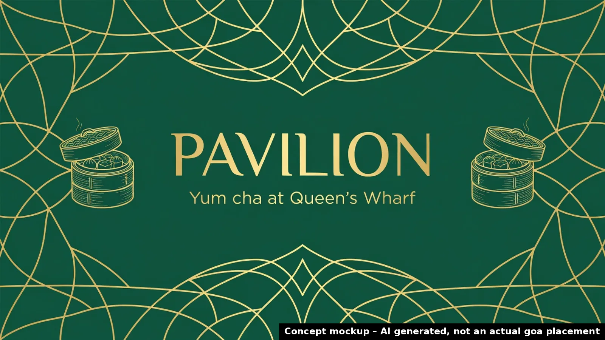

Pavilion (Queen's Wharf)
Why now: Cantonese yum cha restaurant at Terrace Dining, Level 4, 33 William Street, Queen's Wharf.
🗓 Confirmed trading 2026 · Source: Brisbane Food Guide – New Openings (checked 15 Oct 2026) ↗

Where your audience drives
Business location approximate (from the published address/suburb). goa site coordinates from goa's public site locator. © OpenStreetMap contributors.
Priority score 83/100
Why 83? Score breakdown
| Trigger certainty | 25/25 | Confirmed (opened / approved) | |
| goa site proximity | 24/25 | nearest 1.0 km; 7 goa sites within 2 km | |
| Category fit for OOH | 16/20 | Hospitality launch, local awareness need | |
| Timing window | 8/15 | no firm date | |
| Source strength | 10/15 | Specialist guide / operator page |
Heuristic priority score from the factors above, not a prediction of sales outcomes.
Campaign builder
Pick sites and flight length to shape a brief. Pricing isn't shown: indicative pricing confirmed by goa.
Indicative pricing confirmed by goa. Availability subject to booking.
Campaign timeline
- NowRep reviews trigger and approves the draft pitch
- TriggerTrigger: Confirmed trading 2026
- 28 OctSuggested flight start: launch awareness while the opening is fresh
- 25 NovMid-flight check-in: refresh creative / dayparting on digital
- 12 DecQLD summer school holidays begin (to 26 Jan 2027): optional seasonal burst
Concept creative

Concept mockup – AI generated, not an actual goa placement. No real logos used; final creative from the client.
Idea
Create mouth watering visuals of steaming yum cha baskets and tables full of shared plates positioned on goa sites near Queen's Wharf. Pair this with a simple call to action directing people to the new Pavilion venue for an authentic Cantonese experience.
Objective
Drive awareness and trial for the new Cantonese yum cha restaurant opening at Queen's Wharf in 2026.
Audience
Brisbane diners interested in Cantonese cuisine and new restaurant experiences in the CBD and inner south.
Draft pitch email
Subject: Yum cha opening at Queen's Wharf Hi there, I noticed the new Cantonese yum cha restaurant opening at Pavilion Terrace Dining Level 4 33 William Street Queen's Wharf Brisbane CBD confirmed trading 2026 according to the Brisbane Food Guide New Openings checked 15 Oct 2026. This is a great opportunity to drive awareness and foot traffic right from launch. goa has strong nearby sites including THE goa GRID at 193 Melbourne St West End only 1.0 km away and Iconic at 201 Leichhardt St Spring Hill 1.1 km away. These locations deliver high visibility to Brisbane CBD and surrounding areas. Would you have time for a quick 15 minute chat to explore how we can support your opening? Thanks, [Rep name], goa Reply STOP to opt out.
AI draft. Requires rep review and approval; sent only from the rep's Outlook, with opt-out (Spam Act 2003).
Next step
Book a 15-minute chat with the goa team to confirm availability and indicative pricing for your selected sites.
Talk to goa →